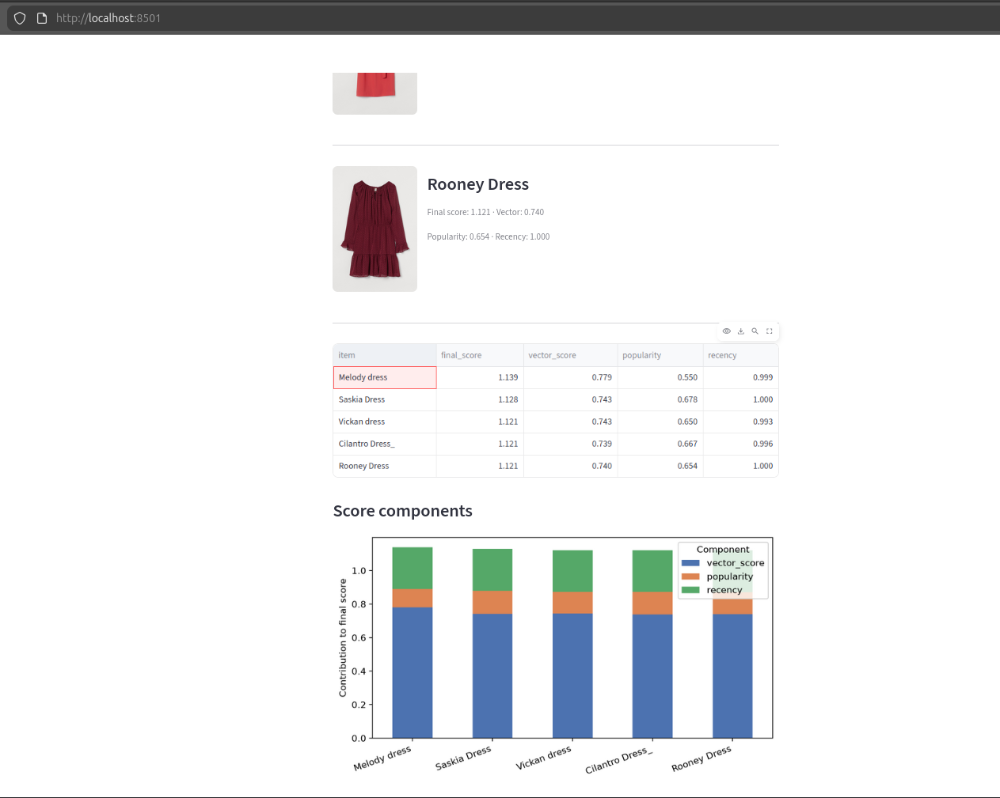

Vector search finds what's similar. It doesn't decide what to show first.
A walkthrough on combining vector similarity with business logic to build recommendations that actually rank the way a business needs them to.

"This guide looks at how to combine vector similarity with business logic to improve recommendations."
01What this article covers
Semantic search is the "easier" part now — embed a query, find nearby vectors, done. The harder, more interesting problem is what happens after retrieval: turning a list of "similar" items into a list of items worth showing.
The setup
The aim is to have a collection loaded into Qdrant.
I used a real H&M product dataset (downloaded from Hugging face/Kaggle).
This dataset is 247Mb, and has, or rather had links to images on AWS S3 : "All product images uploaded to S3 with direct URL access via image_url field".
This seems to have expired, so I got 32Gb images from the Kaggle dataset and modded my code to find images from local directory served by http-server.
To begin with, use dense vectors and payload fields like popularity and recency. Modify the payload values if required, you can use Qdrant's 'set_payload'If you use AI to help, you'll need to remind it that this dataset is several years old, else you would get a large number like 2197 for "days since purchase" - the fix is to set a global day zero, and cache it, with ttl=3600 so it stays 'current' as hours/days go by.
The tool
Qdrant's FormulaQuery — a way to define a ranking function on top of retrieval, without leaving the database.
The demo
A small Streamlit app where you can drag popularity and recency weights and watch the ranking move in real time.
The payoff
A mental model for where hand-designed score boosted ranking ends and when you might want to consider Learn-to-Rank
02Where we're headed
Eight pages, jump ahead or follow along linearly.